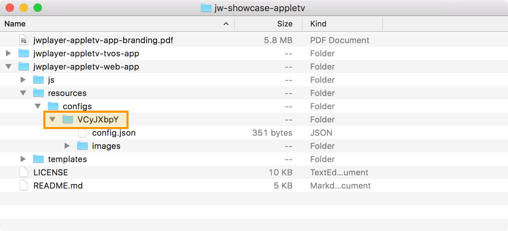
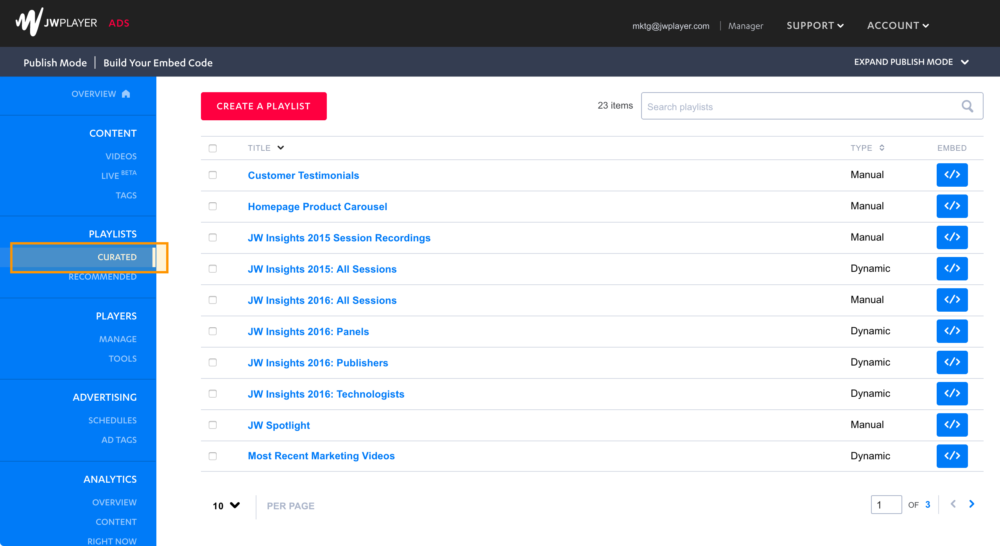
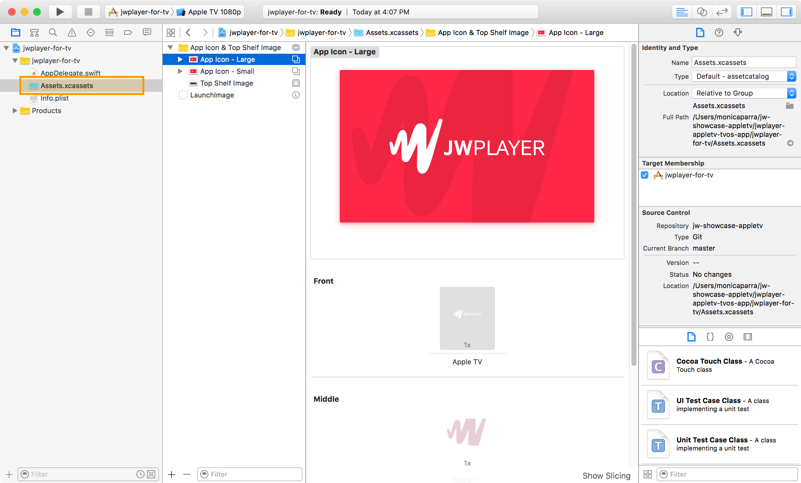

Getting Started with JW Showcase for Apple TV
JW Showcase is a sample application that leverages playlists from JW Platform to distribute your content across platforms. This guide will provide instructions for getting set up with our Apple TV app.
To get started, we recommend cloning the JW Showcase for Apple TV source code within Github. Modifying the cloned source gives you greater control over the app framework and allows you to keep your Showcase app in sync with our source repository as we add new features and bug fixes.
Download the latest version
Clone the source code from: https://github.com/jwplayer/jw-showcase-appletv
Configure Your App
Within the jwplayer-appletv-web-app/resources/configs folder, you'll need to rename the VCyJXbpY directory with your account API key.

To locate your account API key in the Dashboard, navigate to "Properties" under "Account. Your API key can be copied from the "API Credentials" section.

Next, open the config.json file in any text editor and replace the default playlist IDs with your own playlist IDs from your content library hosted in JW Platform.
{
"playlists": [
"K6Sl8yPJ",
"BXatQw7p",
"E12RS6r7"
],
"featuredPlaylist": "1AxTdxJn",
Navigate to “Curated” under the “Playlists” section of the dashboard.

Click into any playlist you wish to feature in your app and grab the playlist ID from the top of the playlist detail page.

Branding Your App
In the config.json file, you can set the background color of the app, using a hex value, to match your branding.
"backgroundColor": "#7e0023",
The config.json also looks for a "splashScreen" and "bannerImage" that can be replaced with your own images in the same directory.
"splashScreen": "images/jw-main.png",
"bannerImage": "images/jw-header.png",
| Image | Description | Recommended Size |
|---|---|---|
| splashScreen | Shown while app is loading | 1920x1080 |
| bannerImage | Header image shown on app home screen | 1920x400 |
Xcode Configuration
Open the jwplayer-appletv-tvos-app/jwplayer-for-tv.xcodeproj project in Xcode.
Open the AppDelegate.swift file and change the "baseURL" variable to your web app server location.

Next, open the Info.plist file and change the "jwplayer.account_key" value to your account API key and the "bundle name" to your desired app name.

Lastly, open the "Assets.xcassets" bundle and replace the top shelf and default app icon assets with your own images. For image specs, see our AppleTV Branding Guidelines.

Building Your App
We recommend running the app in the Xcode Apple TV emulator to test that everything is configured properly. After you've ensured that your app is configued properly, build your app.
To submit your app to the Apple App Store see Preparing Your tvOS App for Submission guidelines.